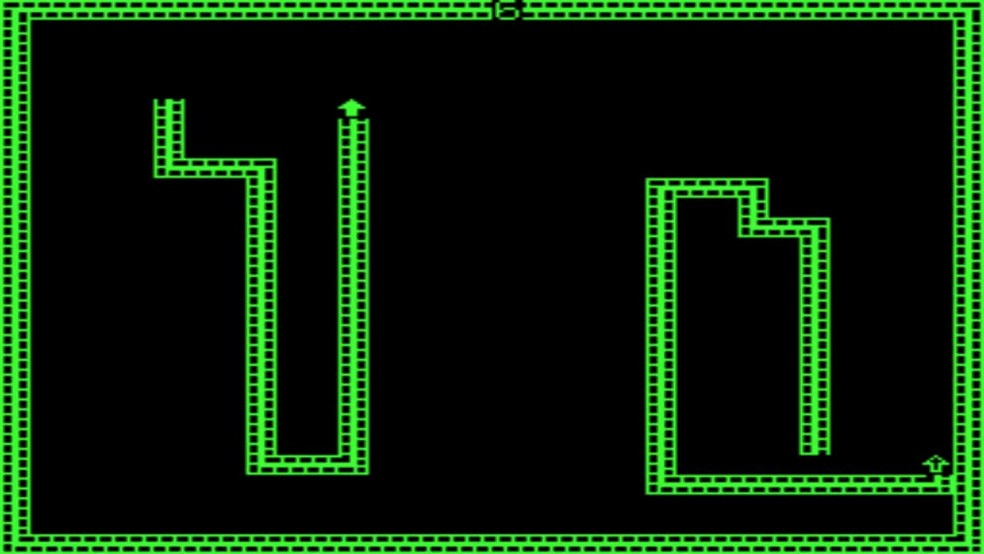
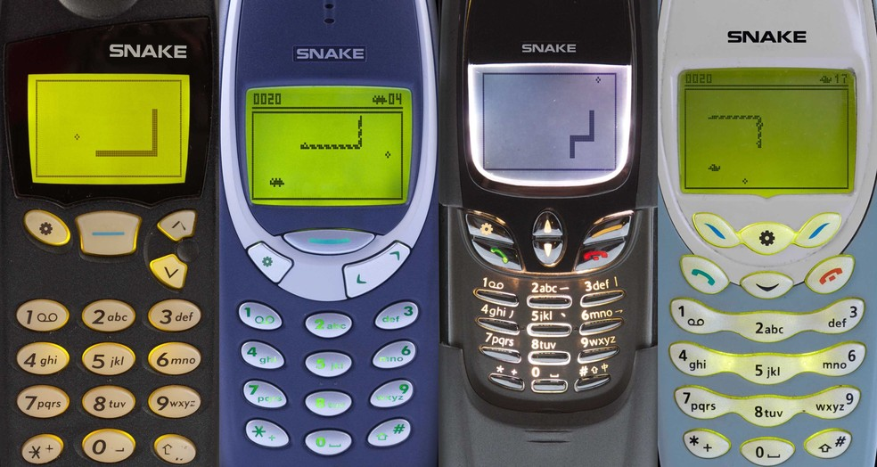

Origem no Arcade

O conceito do jogo da cobrinha já existia bem antes da era dos celulares. Ele apareceu pela primeira vez em 1976 no jogo para arcades Blockade, desenvolvido pela Gremlin Industries. Diferente do game da Nokia, Blockade foi feito para dois jogadores. Cada usuário controla uma cobrinha que vai se expandindo no mapa, criando uma barreira, e quem sobreviver mais tempo sem se chocar com uma barreira vence a partida.
O primeiro Snake saiu em 1997

O jogo da cobrinha da Nokia nasceu em 1997 no celular Nokia 6110. Essa era uma versão bem primária do jogo, em que a cobrinha era apenas uma linha na tela que ia se expandindo ao coletar pequenos quadrados. A sua versão mais famosa foi Snake 2, que saiu posteriormente no Nokia 3310. Nesse, além da cobrinha se parecer mais com uma cobra, o jogador também podia coletar bônus para fazer mais pontos.